28 Years Gone — Harry Potter's Eternal Ache
逝世28年，《哈利·波特》永远的痛。
2026-10-11
A visual memorial for Severus Snape — told the way it was first written: in pictures. The Chinese text lives inside the images, exactly as the author laid it out; an English translation follows each passage.
这是一篇图文纪念。中文已融在图中，保持原文排版；每段图文下方附英文译文。
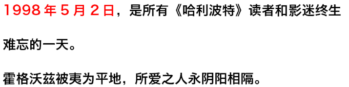
May 2, 1998 — a day every Harry Potter reader and moviegoer will remember for life. Hogwarts was razed to the ground; those we loved, forever parted.
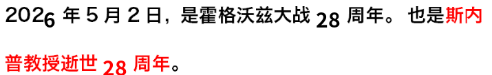
May 2, 2026 marks the 28th anniversary of the Battle of Hogwarts — and the 28th anniversary of Professor Snape’s passing.
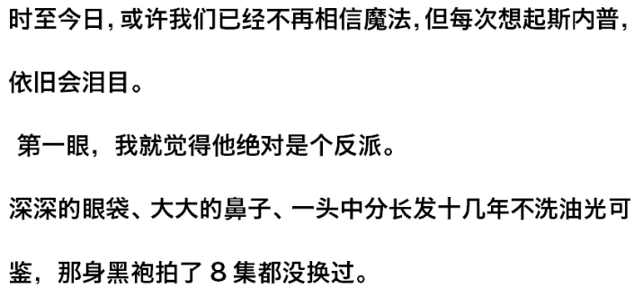
To this day, we may no longer believe in magic — but every time we think of Snape, our eyes still well up.
At first glance, I was certain he was the villain.
Deep eye bags, a large nose, center-parted long hair unwashed for what looked like a decade until it shone — and that black robe he wore through all eight films without ever changing.One glance from him at Harry, and the scar seared with pain — a chill down the spine.He was menacing, hounding Harry and Ron at every turn, giving no quarter.Cruel and ungenerous — Neville’s greatest fear was Snape himself.He had been a Death Eater, notorious and reviled.
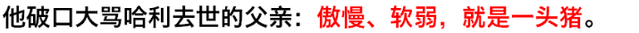
He cursed Harry’s dead father to his face: arrogant, weak — nothing but a pig.It was he who killed Dumbledore with his own hand!
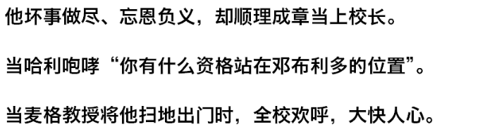
After every evil deed, every betrayal, he ascended to Headmaster as if it were only natural.
When Harry roared, “What right have you to stand where Dumbledore stood?”
When Professor McGonagall drove him out, the whole school cheered — deeply, darkly satisfying.
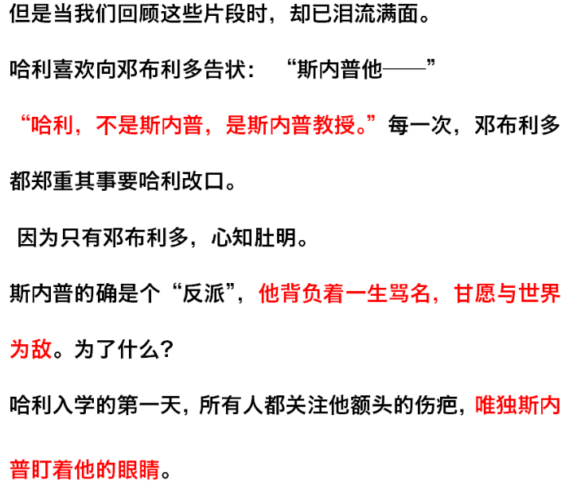
But looking back on these moments now, we are in tears.
Harry loved to tattle to Dumbledore: “Snape — he—” “Harry, not Snape. Professor Snape.” Every time, Dumbledore solemnly corrected him.
Because only Dumbledore knew the truth.
Snape was indeed a “villain” — he bore a lifetime of infamy, willingly making the world his enemy. For what?
On Harry’s first day at school, everyone stared at the scar on his forehead. Only Snape stared into his eyes.From the first glance, to every glance after.Only because Harry had his mother Lily’s eyes.
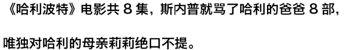
Across all eight Harry Potter films, Snape cursed Harry’s father in every single one — yet never breathed a word about Harry’s mother, Lily.
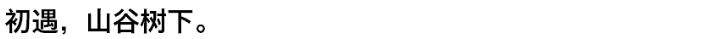
Their first meeting: beneath a tree in a valley.
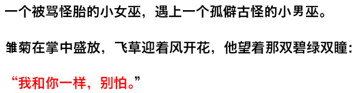
A little witch called a freak met a lonely, odd little wizard.
Daisies bloomed in her palm, flutterby bushes flowered in the wind, and he gazed into those green eyes: “I’m just like you. Don’t be afraid.”
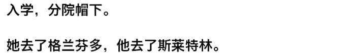
At school, beneath the Sorting Hat — she went to Gryffindor, he to Slytherin.
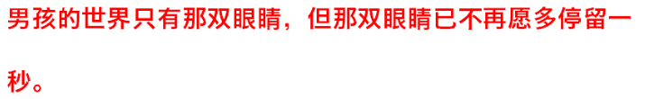
The boy’s world held only those eyes — but those eyes would no longer linger on him for even a second.
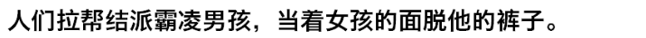
They ganged up to bully the boy, stripping his trousers off in front of the girl.
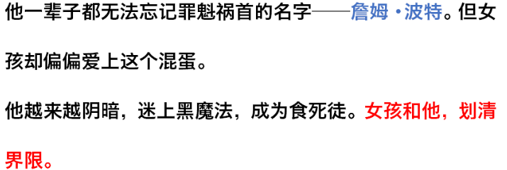
He could never forget the ringleader’s name — James Potter. Yet the girl fell for that scoundrel.
He grew darker, obsessed with the Dark Arts, became a Death Eater. The girl cut him off.
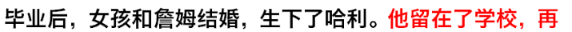
After graduation, the girl married James and had Harry. He stayed at the school — and never loved anyone again.— and never loved anyone again.
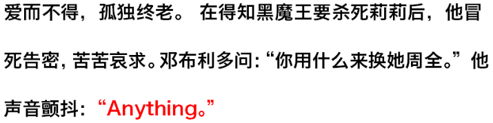
To love without ever having, to grow old alone. Learning the Dark Lord meant to kill Lily, he risked death to pass word, begging desperately. Dumbledore asked, “What will you give in exchange for her safety?” His voice trembling: “Anything.”
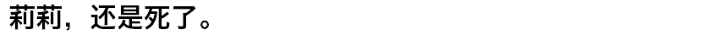
Lily died anyway.
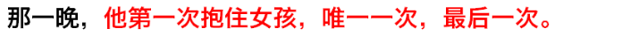
That night, he held the girl for the first time — the only time, the last time.
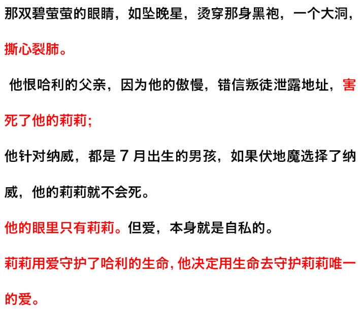
Those luminous green eyes, like fallen evening stars, burned through his black robe — a great hole, heart-rending.
He hated Harry’s father — for his arrogance, for trusting the traitor who gave away the address, for causing Lily’s death.
He targeted Neville — both boys born in July; had Voldemort chosen Neville, his Lily would not have died.
His eyes held only Lily. But love, in itself, is selfish.
Lily guarded Harry’s life with love; he resolved to guard Lily’s only love with his life.
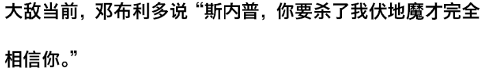
With the enemy at the gates, Dumbledore said, “Snape, you must kill me before Voldemort will trust you completely.”
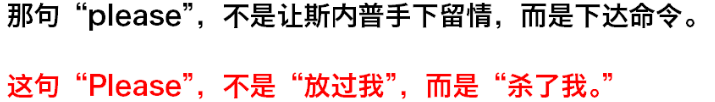
That “please” was not begging Snape for mercy — it was an order. That “Please” did not mean “spare me.” It meant “kill me.”
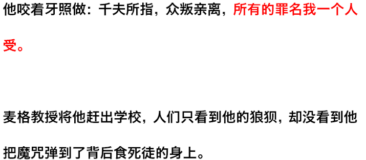
He gritted his teeth and obeyed: condemned by thousands, forsaken by all — every crime his alone to bear.
When McGonagall drove him from the school, people saw only his disgrace — not how he deflected his curses onto the Death Eaters behind him.
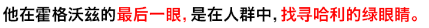
His last glance at Hogwarts swept the crowd, searching for Harry’s green eyes.
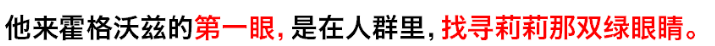
His first glance at Hogwarts had swept a crowd, searching for Lily’s green eyes.
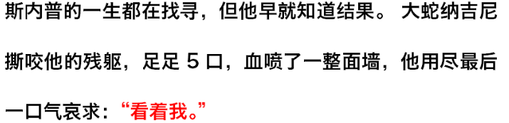
Snape spent his life searching — though he had long known the answer. The great serpent Nagini tore at his broken body, five bites, blood spraying an entire wall, and with his last breath he pleaded: “Look at me.”“You have your mother’s eyes” — unwavering, unto death.
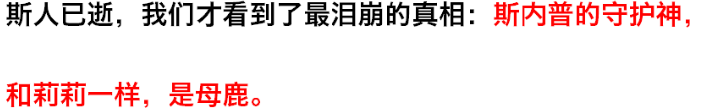
Only after he was gone did we learn the most heartbreaking truth: Snape’s Patronus, like Lily’s, was a doe.
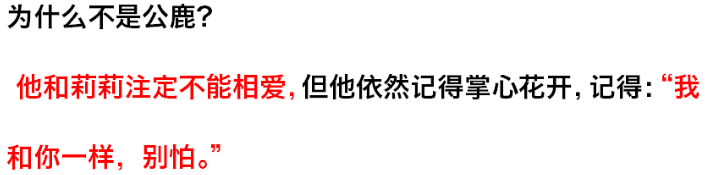
Why not a stag?
He and Lily were never meant to love — yet he still remembered the blossom in her palm, still remembered: “I’m just like you. Don’t be afraid.”
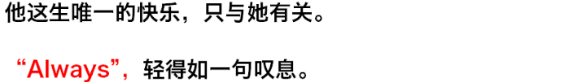
The only happiness of his life had to do with her. “Always” — light as a sigh.
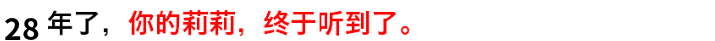
Twenty-eight years. Your Lily finally heard it.
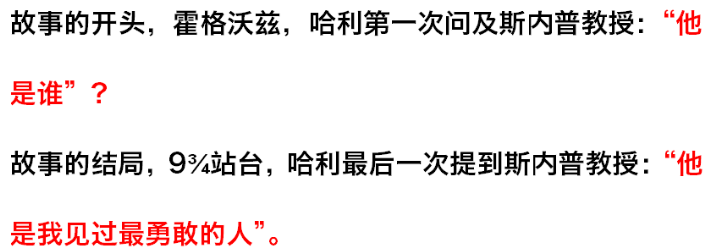
At the story’s beginning, at Hogwarts, Harry first asked of Professor Snape: “Who is he?”
At the story’s end, at Platform 9¾, Harry spoke of Professor Snape for the last time: “He was the bravest man I ever knew.”
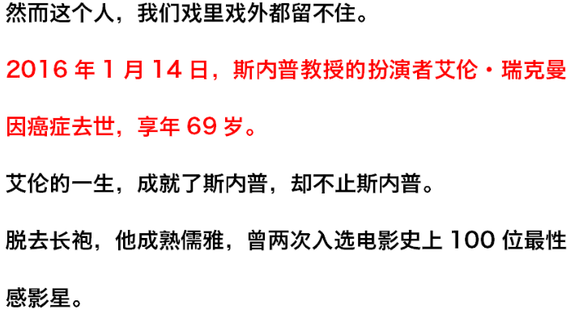
Yet this man we could keep neither on screen nor off.
On January 14, 2016, Alan Rickman — who played Professor Snape — died of cancer. He was 69.
Alan’s life made Snape — but was far more than Snape.
Out of the robes, he was mature and refined, twice named among the 100 sexiest film stars in history.
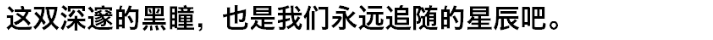
Those deep dark eyes — the stars we shall follow forever.
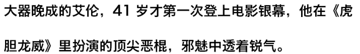
A late bloomer, Alan first appeared on the silver screen at 41, playing the ultimate villain in Die Hard — wickedly charming with an edge of steel.
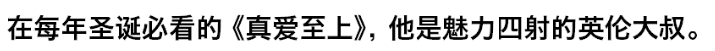
In Love Actually, the must-watch every Christmas, he was the utterly charming English gentleman.In Sense and Sensibility, he was the restrained, tender Colonel Brandon.In Dogma, he was the deadpan angel flipping the bird.In Galaxy Quest, Alan transformed into an adorable alien.
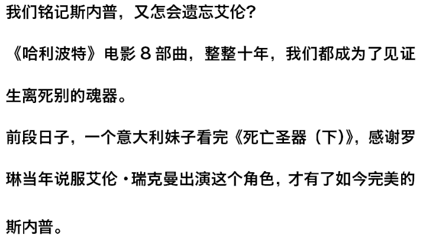
We remember Snape — how could we forget Alan?
Across the eight Harry Potter films, a full ten years, we all became Horcruxes bearing witness to parting and death.
Not long ago, an Italian girl, after watching Deathly Hallows Part 2, thanked Rowling for persuading Alan Rickman to take the role all those years ago — giving us the perfect Snape.
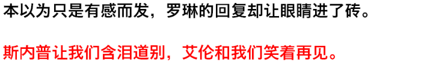
What seemed a passing thought drew an answer from Rowling that brought tears to our eyes.
Snape made us say goodbye through tears; Alan left us with a smile.
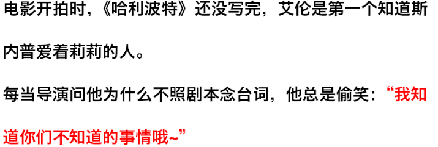
When filming began, Harry Potter wasn’t finished being written — Alan was the first to know that Snape loved Lily.
Whenever the director asked why he wouldn’t read his lines as written, he’d smirk: “I know things you don’t~”
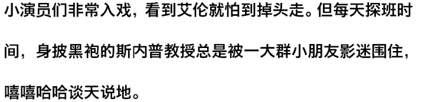
The young actors were so into it they’d turn and run at the sight of Alan. But every day at visiting hours, Professor Snape in his black robes was mobbed by crowds of young fans, chatting and laughing together.
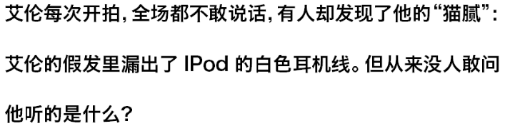
Whenever Alan was filming, no one on set dared speak — yet someone spotted his secret: the white earphone cord of an iPod peeking from under his wig. But no one ever dared ask what he was listening to.
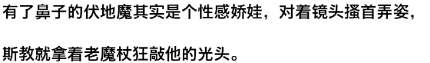
Voldemort with a nose turned out to be a glamorous diva, posing for the camera — while Snape rapped his bald head with the Elder Wand.
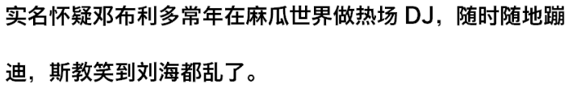
It’s strongly suspected Dumbledore moonlights as a warm-up DJ in the Muggle world, dancing anywhere anytime — Snape laughed so hard his bangs went crooked.
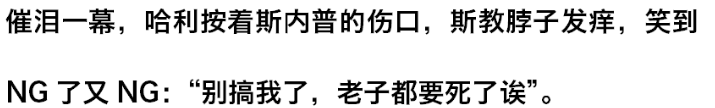
In a tearjerker scene, Harry pressed on Snape’s wound — Snape’s neck tickled, and he laughed through take after take: “Stop it, I’m supposed to be dying here!”
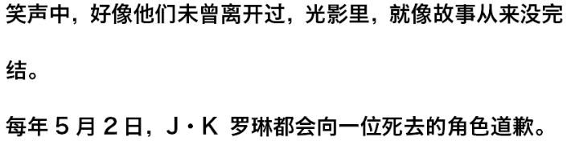
Amid the laughter, it was as if they’d never left — in light and shadow, as if the story never ended.
Every May 2nd, J.K. Rowling apologizes to a character who died.
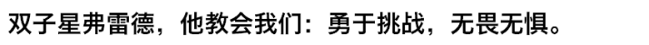
Fred of the twins — he taught us: dare to challenge, fear nothing.
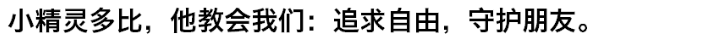
Dobby the house-elf — he taught us: seek freedom, protect your friends.
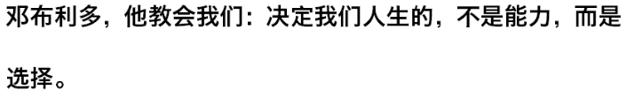
Dumbledore — he taught us: it is not our abilities but our choices that shape our lives.Professor Snape — he taught us: the world holds more than the good and the Death Eaters.
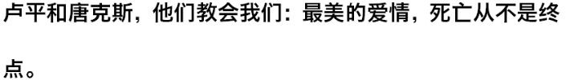
Lupin and Tonks — they taught us: in the most beautiful love, death is never the end.
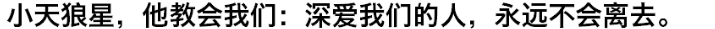
Sirius — he taught us: those who love us deeply never truly leave.
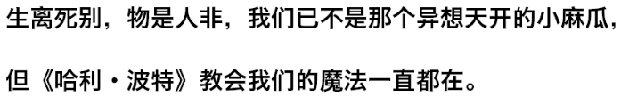
Partings and deaths, the world changed — we are no longer those whimsical little Muggles, but the magic Harry Potter taught us lives on.